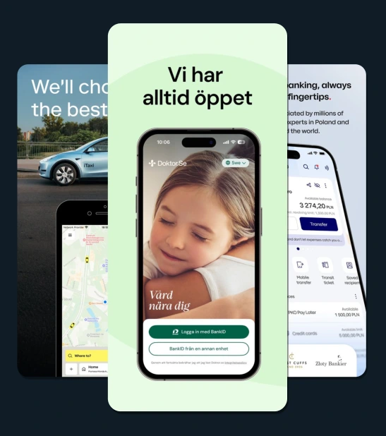
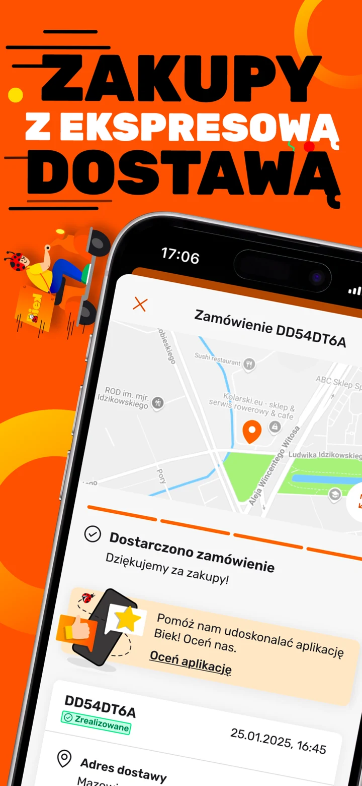
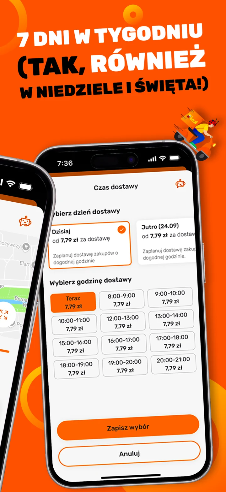
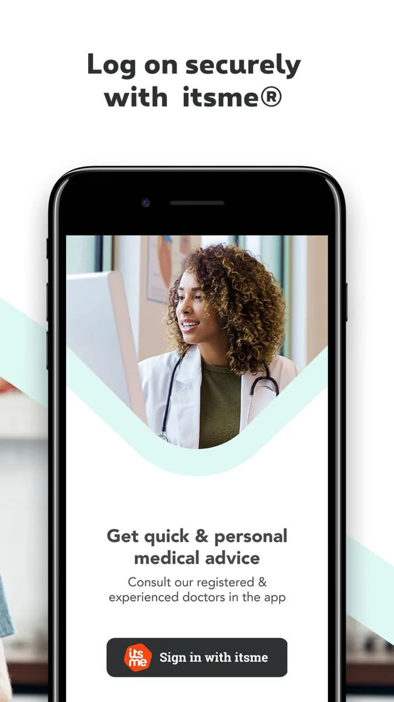
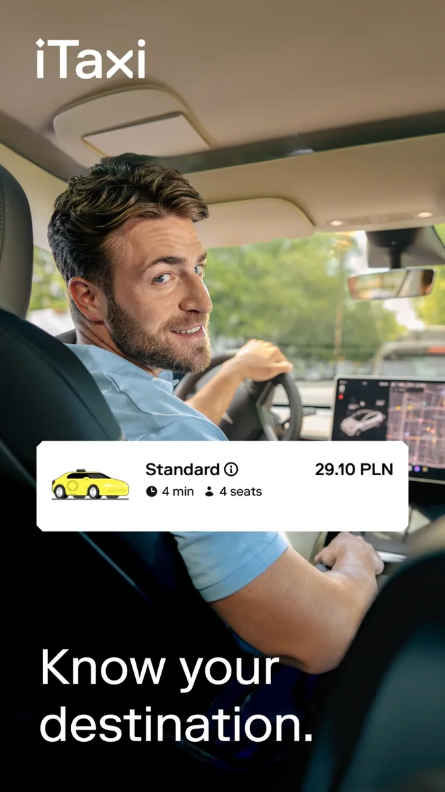
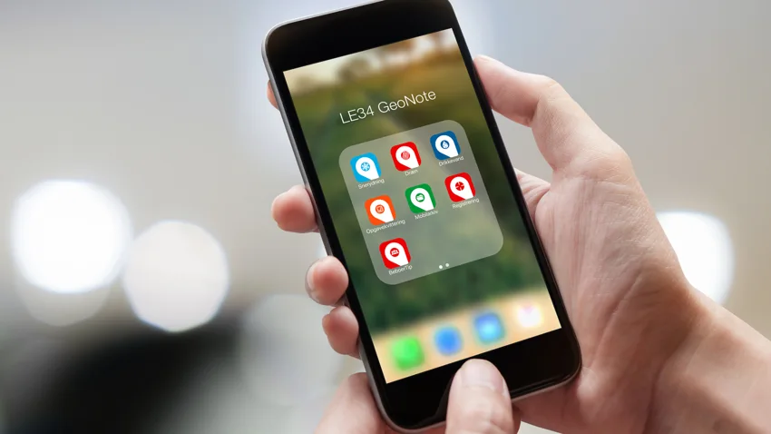
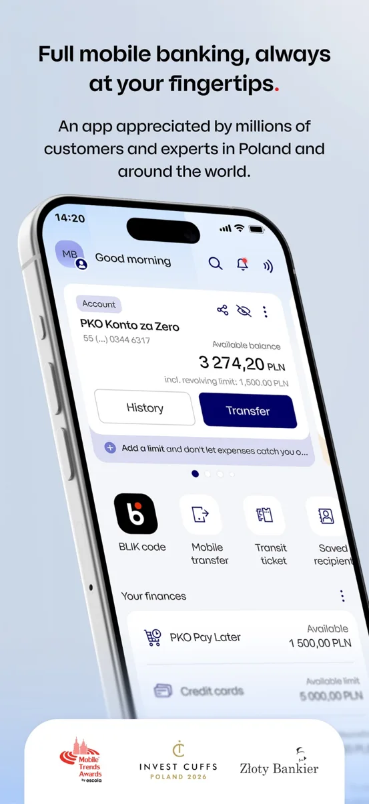
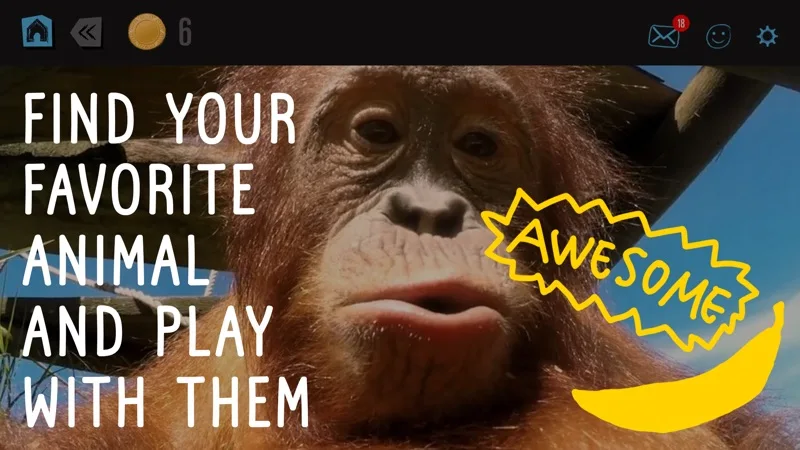
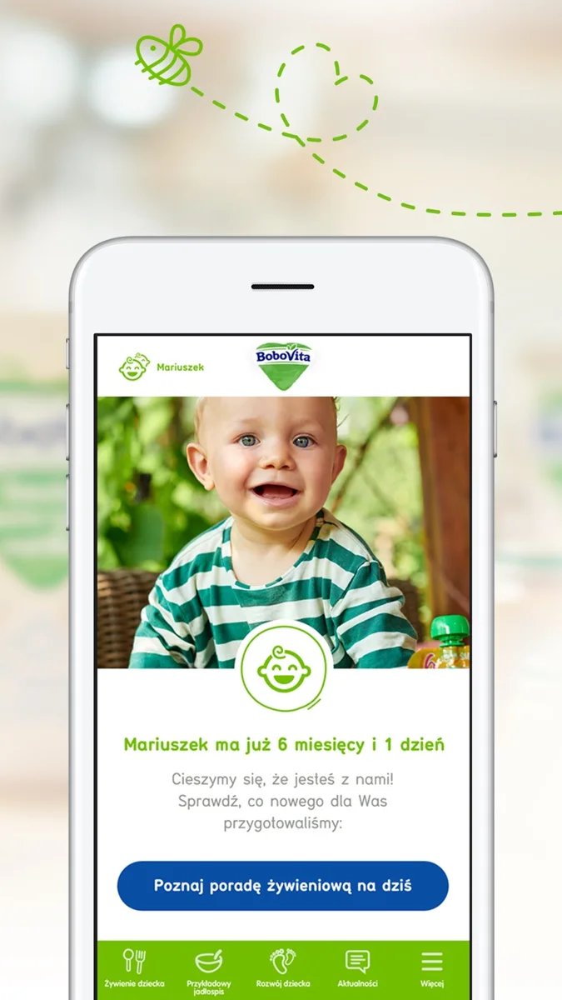
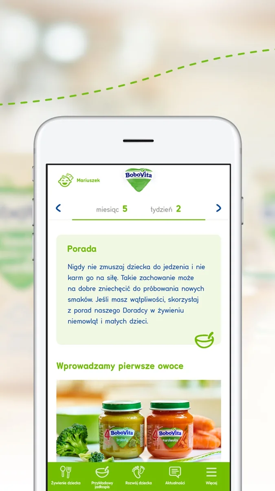

TwigaApp
Built location-based individual and group chat and the app's backend.
I’m an Engineering Manager and mobile developer with 12 years of hands-on experience, nearly five of them leading engineering teams.
Explore the case studies
At Doktor.se I lead a 10-person mobile engineering organisation alongside the cross-functional Consultation & Treatment team. Together these roles cover close to 20 people on platforms with 1M+ registered users per mobile platform.
Through appBEAT I helped win the tender for BIEK by Biedronka, built and led the core mobile team, and co-created its architecture. The app launched nationally in November 2026.
“Discussions with Michal end in actual agreements, with expectations everyone understands the same way, which removes an enormous amount of friction.”
Erik Sandström / Former manager at Doktor.se
iOS Developer, Warsaw
iOS Developer, Warsaw
iOS Consultant; Lead iOS Developer for LE34
Senior iOS Developer
Senior iOS Developer
Engineering Manager, Professional Services
Engineering Manager & App Lead, in parallel
Founder, product & engineering consultant
One mobile platform behind a family of healthcare apps
Doktor.se provides digital and on-site care across Sweden. Its patient app shares one codebase with a family of brand and customer apps, including Doktor.de, AniCura and Belgium's Doktr. Around it sit a clinician app and a back-office app for coordinators, used in clinics across the country.
Promoted from Senior iOS Developer to Engineering Manager within 7 months. Since 2024 I have led two scopes in parallel: App Lead for the 10-person mobile engineering organisation and Engineering Manager for the cross-functional Consultation & Treatment team. I stay hands-on, leading core mobile features from planning to production.
Grocery delivery for Poland’s largest retailer
The app brings grocery delivery to customers of Biedronka, Poland’s largest retailer. I joined the bid team to shape the mobile proposal and stayed on through friends-and-family testing.
I helped win the tender, built and led the core mobile team and co-created the architecture with fellow engineers. I also contributed code alongside my Doktor.se role.
Both provider sets implement the same interfaces. We could build and test screens, paging, errors and empty states before backend services were ready.





End-to-end encryption without breaking the chatbot
Doktr, a Belgian digital-health app built on Doktor.se's white-label platform, wanted end-to-end encryption for patient–doctor conversations, while every other customer kept the existing behaviour. The catch: the chatbot used patients' answers to decide each next step.
I guided the work from feasibility to production release, with the Product Manager and the engineering teams. Before that, as an iOS developer, I implemented features for Doktr and published its releases.

Modernising a legacy iOS app for a major redesign
iTaxi, one of the leading consumer mobility platforms in Poland, planned a major product redesign. The new experience had to land on a legacy iOS codebase.
I led iOS delivery for the redesign, from modernising the codebase to supporting the client through validation and release.


40+ iOS apps from five white-label foundations
LE34 builds geospatial solutions for municipalities, surveying and field operations. Its customers needed apps for citizen reporting, map editing, surveying and live tracking of field crews, including variants for individual municipalities.
I co-created the mobile department and acted as Lead iOS Developer, taking products from first idea to the App Store and maintaining them afterwards.

Contributed across the development lifecycle of new iOS features for PKO Bank Polski's consumer mobile banking app, delivered core application solutions and presented new functionality to business partners.


Developed the tvOS app and its iOS companion controller, including phone-to-Apple TV communication: On-Demand Resources, focus-based navigation, service discovery and a custom InputStream-based server.


Created and refined the UI, improved responsiveness and animation smoothness, designed and implemented new features, and advised on and integrated the mobile backend.




Built location-based individual and group chat and the app's backend.
Implemented the native Swift social application.
Created the educational museum app from scratch, with augmented reality and photo editing.
Built from scratch to learn Swift 1.0, with a Google App Engine backend, analytics and crash reporting.
Publisher SDK and Game Center integrations, plus 64-bit porting, within the game team.
Publisher SDK and Game Center integrations, plus 64-bit porting, for the sequel.
Publisher SDK and Game Center integrations, plus 64-bit porting.
Created New Bobovita from scratch.
Created the iOS app from scratch.
Created the iOS app from scratch.
Founded the project and led the team to 2nd place in the Polish stage of Microsoft Imagine Cup 2013.
iPhone and iPad app tracking webpage visits through an embeddable image; my 2018 CV reported 25,000+ users.
My game credits cover publisher integration and porting work within the development teams.
Challenged a ~$1,700/month external macOS build service. Analysed real usage, then designed and introduced self-hosted Mac mini runners that kept automated builds and releases running, saving roughly $20k a year.
Led the analytics transformation: event taxonomy, tracking rules, reporting standards and dashboards. Initiated the Amplitude-to-Mixpanel evaluation and migration, keeping the capabilities teams needed.
Introduced Amplitude with a shared event taxonomy, cleaned up events and gave every team a migration guide. Verified ingestion in staging; a forced app update completed the scheduled GA4 cutoff.
Initiated and coordinated repository ownership and open-source licence governance across several technology stacks, working with code owners and the technology leadership forum to remediate licensing issues.
Built the reusable, MCP-integrated agent workflows and foundation framework that plug Linear, Jira and more into one traceable flow. Started in mobile, spread to QA; contributed to enablement across ~40 people.
Shipped 30+ Node.js, JavaScript, TypeScript and Python bug fixes across company repositories with AI-assisted workflows, freeing up the engineers.
Managed the long tail of migrations for customer apps on different versions of the shared SDK, using feature flags, Git branching and deployment automation to keep change controlled.
Set up Datadog dashboards, monitors and alerts to watch deployed changes in production, with clear rollback plans prepared before major refactorings went live.
Wrote a strategy proposal on my own initiative that helped shift Doktor.se toward a product-facing healthcare marketplace, then partnered with the CEO, Business Manager, Product and Design on it.
Lead the team behind the booking system: doctors or coordinators set availability, patients book those slots, with a recurring yearly revisit model and cancellations by patients or doctors.
Led the team that integrated an external electronic health record system, automating documentation that doctors had filled in by hand, so more of their day goes to treating patients.
Of several A/B tests my team ran, one settled the paywall content on a variant that converted in 70% of cases, significantly ahead of the alternatives tested.
Contacted Spotify's team and negotiated free use of Confidence, its experimentation platform, in exchange for product feedback.
Data showed that asking for an email the app could collect later raised onboarding drop-off by 40%. The team used remotely configurable onboarding to test removing it, then captured the email later.
Represented Doktor.se on site: prepared the assessment, interviewed technical stakeholders and the owner, reviewed the technology stack and gave leadership a recommendation.
On top of daily work, prototyped a redesigned home page showing how a new feature could connect with the existing feature set.
Made the initial architecture decisions, designed the API contracts, built iOS hands-on, led the Android developer and owned publishing; then ran maintenance with offshore developers in Dubai.
“Michal consistently looked beyond implementation itself and considered cost, operational efficiency and the wider impact of technical decisions.”
Viktor Arcini Sjöberg / Head of Product, Doktor.se
Excerpts from LinkedIn recommendations.
“I promoted Michal at Doktor.se because he was already operating well beyond his formal role. He is one of very few engineering leaders I've worked with who instinctively thinks like an owner of the business, not just of the technology…”
Erik Sandström / Former manager at Doktor.se; CTO & Co-founder, Bardo Technology
“Michal has a strong ability to take complex business or clinical problems and turn them into concrete product and technology initiatives. He worked effectively with senior leadership, product teams, engineers and clinical stakeholders, and was often able to bring structure and technical perspective to discussions that initially started as business problems.”
Viktor Arcini Sjöberg / Head of Product, Doktor.se
“It's rare to find someone who combines deep technical skill with such a broad, business-minded outlook. Michal is highly competent in his craft — his iOS expertise is a go-to reference point for the whole team, and he consistently brings creative, innovative ideas to the table rather than just executing what's asked of him.”
Karin Bergström / Head of Product and Medical Doctor, Doktor.se
“Michał has a lot of hands on experience in building and developing application teams, from discovery and estimation to recruitment, architecture and delivery. And when we needed extra support, he usually knew the right person to bring in.”
Michał Łukawski / Client; Head of Growth, SYZYGY; co-founder, adcourt
“I had the pleasure of working closely with Michal, and I can confidently say he is one of the most effective Engineering Managers I've collaborated with. He combines strong technical knowledge with exceptional leadership skills, creating an environment where engineers feel both challenged and supported.”
Bojan Marković / Senior iOS Developer, Doktor.se
“What sets Michal apart is not only his deep expertise but also his willingness to help, always prompt, approachable, and ready to jump in when needed. He brings a calm, solutions-focused mindset to every challenge and creates an environment where collaboration and growth thrive.”
Ilija Levov / QA Engineer who reported to me, Doktor.se